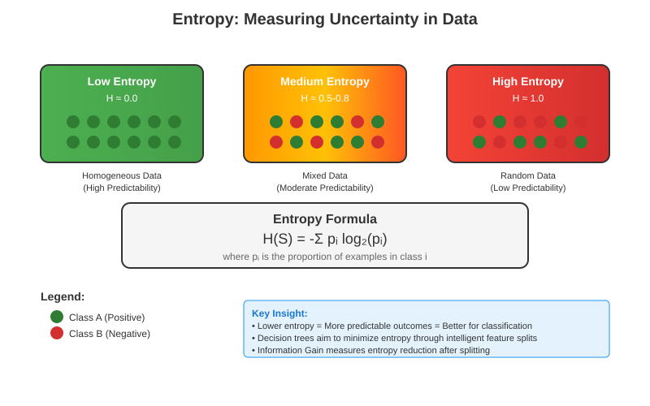
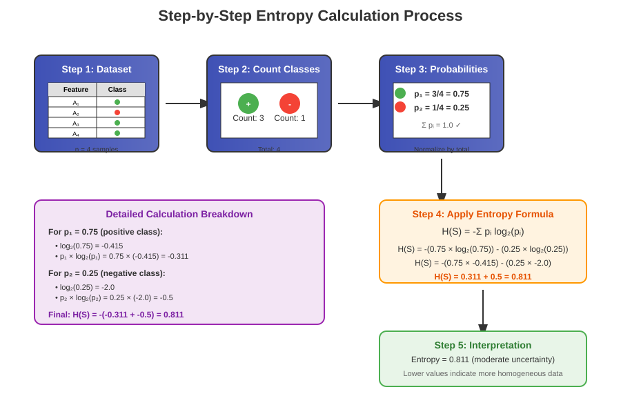
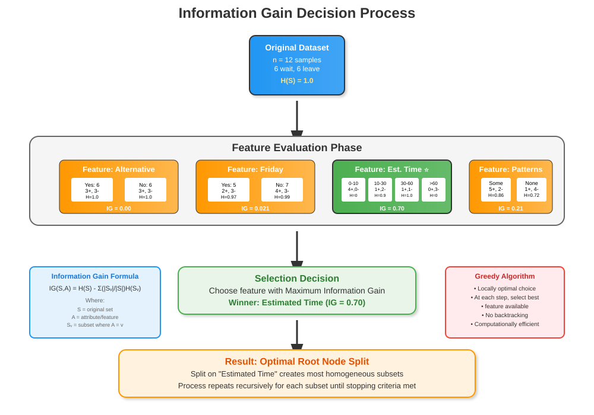
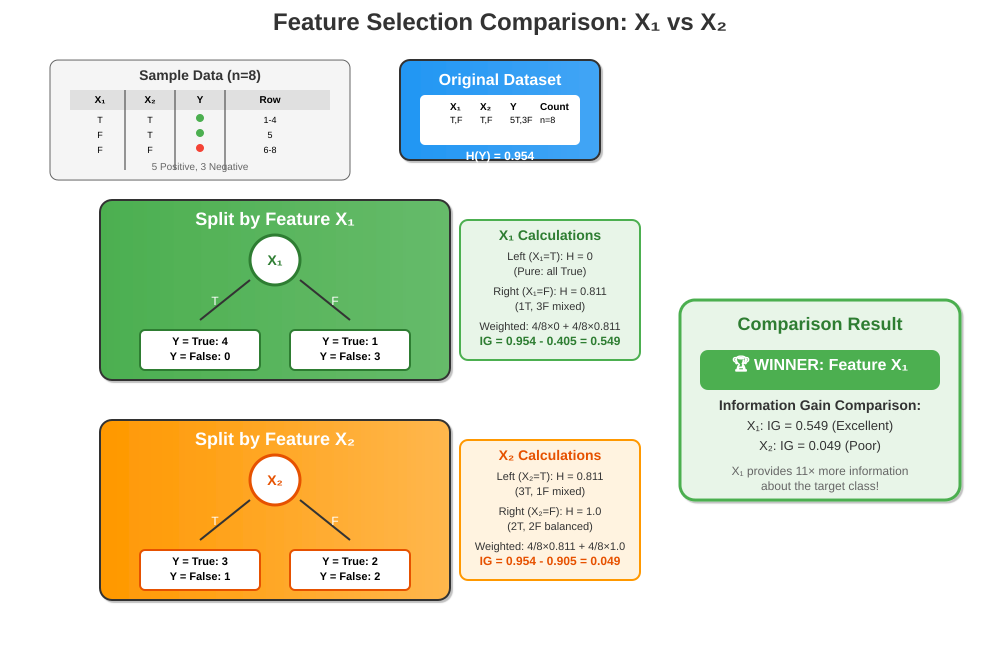
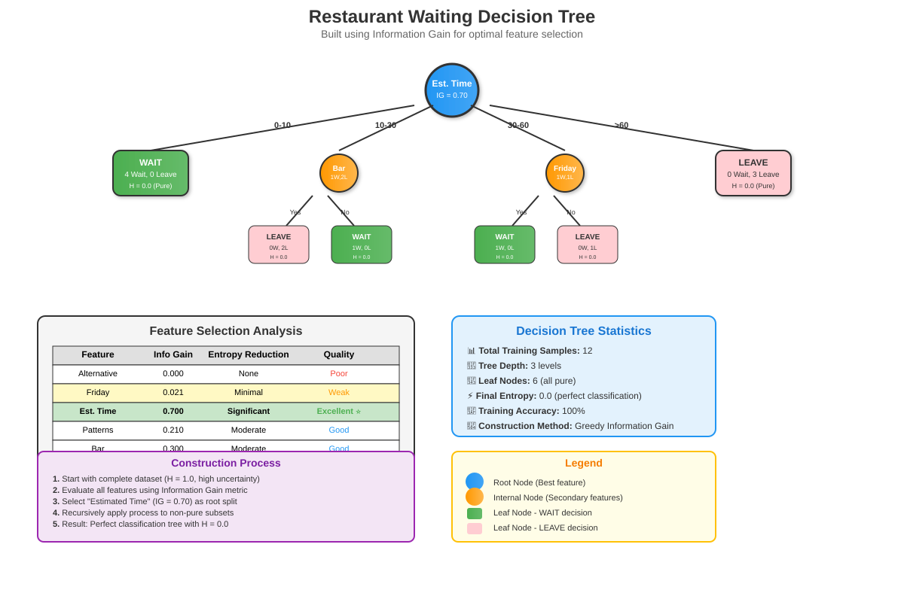

Information Gain in Decision Trees
🎯 Master the fundamental metric that drives intelligent feature selection in decision tree algorithms
📋 Quick Navigation
- 🔍 Introduction
- 📊 Understanding Entropy
- ⚡ Information Gain Fundamentals
- 🛠️ Calculation Process
- 🍽️ Restaurant Example Walkthrough
- 🔄 Feature Comparison
- 📈 Alternative Metrics
- 💻 Implementation Guide
- 📚 References & Further Reading
🔍 Introduction
Information Gain is a crucial information theory metric that determines how decision trees choose the most effective features for data splitting. It measures how much information a feature provides about the target class, directly influencing the order of attributes in decision tree nodes.
Key Concepts
- Entropy: Measures impurity or uncertainty in data groups
- Information Gain: Quantifies the reduction in entropy after splitting
- Feature Selection: Greedy algorithm approach for optimal tree construction
- Homogeneous Splits: Goal of creating uniform data subsets

The fundamental question Information Gain answers is: "Which feature, when used for splitting, provides the maximum reduction in uncertainty about our target outcomes?"
📊 Understanding Entropy
Entropy quantifies the uncertainty or randomness in a dataset. In decision trees, we aim to minimize entropy by creating homogeneous groups where outcomes are as uniform as possible.
Mathematical Foundation
The entropy of a set S is calculated as:
Where:
- p_i is the proportion of examples in class i
- n is the number of classes
- Lower entropy indicates more uniform (pure) data
Entropy Characteristics
| Entropy Value | Data State | Example |
|---|---|---|
| 0.0 | Perfect purity | All examples same class |
| 1.0 | Maximum uncertainty | 50-50 binary split |
| > 1.0 | High uncertainty | Multiple classes, uniform distribution |

Practical Interpretation
- High Entropy: Mixed outcomes, difficult to predict
- Low Entropy: Uniform outcomes, easy to predict
- Zero Entropy: Perfect classification, no uncertainty
⚡ Information Gain Fundamentals
Information Gain measures the effectiveness of splitting data based on a particular feature. It represents the difference between the original entropy and the weighted average entropy of the resulting subsets.
Core Formula
Where:
- S is the original dataset
- A is the attribute/feature being evaluated
- S_v represents subset of S where attribute A has value v
- |S| denotes the size of set S
Decision Process

- Calculate original entropy of the dataset
- Split data based on each available feature
- Compute weighted entropy for each split
- Calculate Information Gain for each feature
- Select feature with maximum Information Gain
Greedy Algorithm Approach
The decision tree construction follows a greedy strategy:
- Evaluate all available features at each node
- Choose the feature providing maximum Information Gain
- Recursively apply the process to resulting subsets
- Continue until stopping criteria are met
🛠️ Calculation Process
Let's walk through a systematic approach to calculating Information Gain with a concrete example.
Step-by-Step Process
Step 1: Original Dataset Analysis
Consider a binary classification problem with 8 data points:
| X₁ | X₂ | Y |
|---|---|---|
| T | T | T |
| T | F | T |
| T | T | T |
| T | F | T |
| F | T | T |
| F | F | F |
| F | T | F |
| F | F | F |
- Positive outcomes: 5 out of 8 (62.5%)
- Negative outcomes: 3 out of 8 (37.5%)
Step 2: Calculate Original Entropy
Step 3: Feature Evaluation

Splitting on X₁: - When X₁ = True: 4 data points, all Y = True (Entropy = 0) - When X₁ = False: 4 data points, 1 True, 3 False (Entropy = 0.811)
Splitting on X₂: - When X₂ = True: 4 data points, 3 True, 1 False (Entropy = 0.811) - When X₂ = False: 4 data points, 2 True, 2 False (Entropy = 1.0)
Step 4: Feature Selection
X₁ provides significantly higher Information Gain (0.549 vs 0.049), making it the optimal choice for the root node split.
🍽️ Restaurant Example Walkthrough
Let's explore a practical scenario using restaurant waiting decisions to understand Information Gain application.
Problem Setup
Scenario: Predicting whether customers will wait at a restaurant based on various features.
Dataset: 12 data points with features: - Alternative restaurant availability - Day of week (Friday/Not Friday) - Estimated waiting time - Patterns (customer type) - Bar availability
Target: Wait (Yes/No)
Feature Analysis Results

1. Alternative Restaurant Feature
Split Results: - Alternative = Yes: 6 points, 3 wait, 3 leave (50-50 split) - Alternative = No: 6 points, 3 wait, 3 leave (50-50 split)
Information Gain: Nearly 0 (no reduction in uncertainty)
Conclusion: Poor feature for initial split
2. Friday Feature
Split Results: - Friday = Yes: 5 points, 2 wait, 3 leave - Friday = No: 7 points, 4 wait, 3 leave
Calculation:
Conclusion: Minimal information gain
3. Estimated Waiting Time Feature
Split Results: - 0-10 minutes: 4 points, all wait (pure subset) - 10-30 minutes: 3 points, 1 wait, 2 leave - 30-60 minutes: 2 points, 1 wait, 1 leave - >60 minutes: 3 points, all leave (pure subset)
Information Gain: 0.7 (significant reduction in entropy)
Conclusion: Excellent feature for root split
Optimal Tree Construction
The final decision tree using optimal feature selection:
- Root Node: Estimated Waiting Time
- Second Level: Patterns, Bar availability, Friday (as needed)
- Result: Perfect classification with 0 entropy
This demonstrates how Information Gain guides the construction of highly effective decision trees through intelligent feature selection.
🔄 Feature Comparison
Understanding how different features perform helps in building intuition for Information Gain effectiveness.
Comparative Analysis
| Feature | Information Gain | Entropy Reduction | Split Quality |
|---|---|---|---|
| Alternative | 0.000 | None | Poor |
| Friday | 0.021 | Minimal | Weak |
| Estimated Time | 0.700 | Significant | Excellent |
| Patterns | 0.400 | Moderate | Good |
| Bar Available | 0.300 | Moderate | Good |
Key Insights
High Information Gain Features: - Create more homogeneous subsets - Lead to shorter, more interpretable trees - Provide better generalization
Low Information Gain Features: - Minimal impact on entropy reduction - May indicate irrelevant or redundant features - Should be considered for pruning
Selection Strategy
- Primary Criterion: Maximum Information Gain
- Secondary Considerations:
- Feature interpretability
- Computational efficiency
- Overfitting prevention
- Domain knowledge
📈 Alternative Metrics
While Information Gain using entropy is widely used, alternative metrics offer different perspectives on feature selection.
Gini Index
The Gini Index provides a computationally efficient alternative to entropy-based Information Gain.
Mathematical Definition
Comparison with Entropy
| Aspect | Entropy | Gini Index |
|---|---|---|
| Computation | Logarithmic | Quadratic |
| Range | [0, log₂(n)] | [0, 1-1/n] |
| Sensitivity | Higher for probability changes | Lower for probability changes |
| Performance | Theoretical optimality | Practical efficiency |
Gini-based Information Gain
Practical Considerations
When to Use Entropy: - Theoretical rigor required - Small datasets - Educational purposes
When to Use Gini: - Large datasets (computational efficiency) - Production systems - Comparable accuracy needed
Performance Comparison
Most empirical studies show that both metrics yield similar tree structures and accuracy, with Gini offering computational advantages for large-scale applications.
💻 Implementation Guide
Python Implementation

import numpy as np
import pandas as pd
from math import log2
from sklearn.tree import DecisionTreeClassifier
from sklearn.model_selection import train_test_split
def calculate_entropy(data):
"""Calculate entropy of a dataset."""
if len(data) == 0:
return 0
# Count occurrences of each class
values, counts = np.unique(data, return_counts=True)
probabilities = counts / len(data)
# Calculate entropy
entropy = -sum(p * log2(p) for p in probabilities if p > 0)
return entropy
def calculate_information_gain(data, feature, target):
"""Calculate information gain for a specific feature."""
# Original entropy
original_entropy = calculate_entropy(data[target])
# Weighted entropy after split
weighted_entropy = 0
for value in data[feature].unique():
subset = data[data[feature] == value]
weight = len(subset) / len(data)
subset_entropy = calculate_entropy(subset[target])
weighted_entropy += weight * subset_entropy
# Information gain
return original_entropy - weighted_entropy
# Example usage
def build_decision_tree_with_ig(X, y, features):
"""Build decision tree using Information Gain for feature selection."""
results = {}
for feature in features:
# Create temporary dataframe
temp_data = X.copy()
temp_data['target'] = y
# Calculate information gain
ig = calculate_information_gain(temp_data, feature, 'target')
results[feature] = ig
print(f"Information Gain for {feature}: {ig:.4f}")
# Select best feature
best_feature = max(results, key=results.get)
print(f"\nBest feature for splitting: {best_feature}")
return results, best_feature
Scikit-learn Integration
# Using scikit-learn's DecisionTreeClassifier
from sklearn.tree import DecisionTreeClassifier, export_text
from sklearn.datasets import make_classification
# Generate sample data
X, y = make_classification(n_samples=1000, n_features=10,
n_informative=5, n_redundant=2,
random_state=42)
# Create decision tree with entropy criterion
dt_entropy = DecisionTreeClassifier(criterion='entropy',
random_state=42,
max_depth=5)
# Train the model
dt_entropy.fit(X, y)
# Display tree structure
tree_rules = export_text(dt_entropy,
feature_names=[f'feature_{i}' for i in range(X.shape[1])])
print(tree_rules)
# Feature importance (based on Information Gain)
feature_importance = dt_entropy.feature_importances_
for i, importance in enumerate(feature_importance):
print(f"Feature {i}: {importance:.4f}")
Hugging Face Integration
🤗 Explore pre-trained models: Decision Tree Models on Hugging Face
Advanced Techniques
- Feature Engineering: Create composite features for better Information Gain
- Handling Continuous Variables: Implement optimal split point discovery
- Multiway Splits: Extend beyond binary splits for categorical features
- Regularization: Combine Information Gain with pruning techniques
📚 References & Further Reading
📖 Foundational Papers
- Quinlan, J. R. (1986). "Induction of Decision Trees" - Machine Learning, 1(1), 81-106
-
Original formulation of ID3 algorithm using Information Gain
-
Shannon, C. E. (1948). "A Mathematical Theory of Communication" - Bell System Technical Journal
-
Foundation of information theory and entropy concepts
-
Breiman, L. et al. (1984). "Classification and Regression Trees (CART)" - Wadsworth
- Introduction of Gini index as alternative to entropy
🔬 Research Articles
- Mingers, J. (1989). "An Empirical Comparison of Selection Measures for Decision-Tree Induction" - Machine Learning, 3(4), 319-342
-
Comprehensive comparison of splitting criteria
-
Kononenko, I. (1995). "On Biases in Estimating Multi-Valued Attributes" - IJCAI
- Analysis of Information Gain bias toward multi-valued attributes
📚 Books & Textbooks
- Hastie, T., Tibshirani, R., & Friedman, J. (2009). "The Elements of Statistical Learning" - Springer
-
Chapter 9: Additive Models, Trees, and Related Methods
-
Russell, S., & Norvig, P. (2020). "Artificial Intelligence: A Modern Approach" - Pearson
-
Chapter 19: Learning from Examples
-
Murphy, K. P. (2012). "Machine Learning: A Probabilistic Perspective" - MIT Press
- Chapter 16: Adaptive Basis Function Models
🌐 Online Resources
- ArXiv Papers: Decision Trees and Information Theory
- Coursera: Machine Learning Course by Andrew Ng
- edX: MIT Introduction to Machine Learning
- Kaggle Learn: Decision Trees Module
This documentation provides a comprehensive foundation for understanding and implementing Information Gain in decision tree algorithms. For practical applications, combine these theoretical insights with domain expertise and empirical validation.